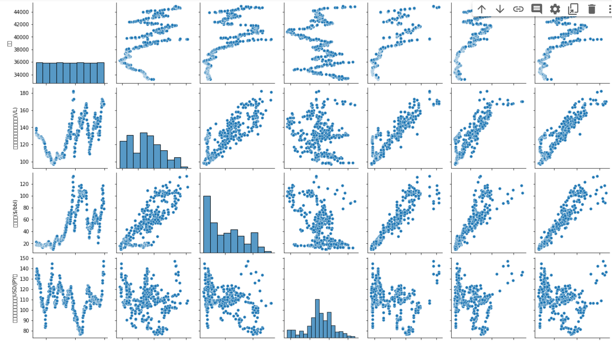
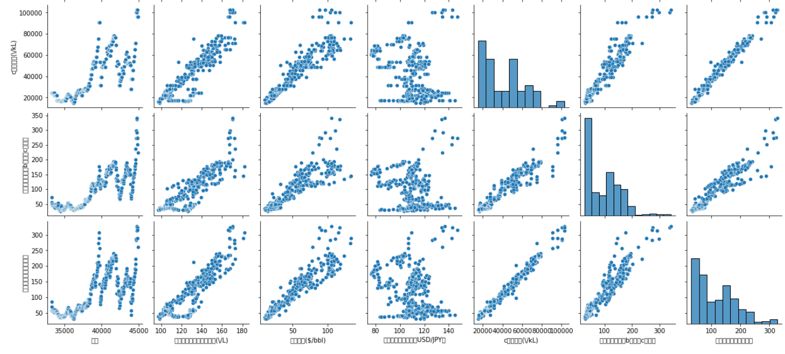
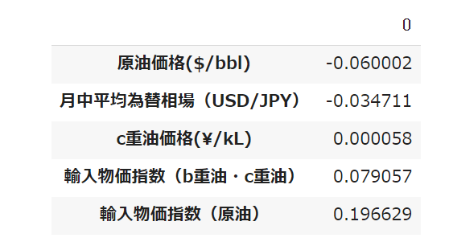
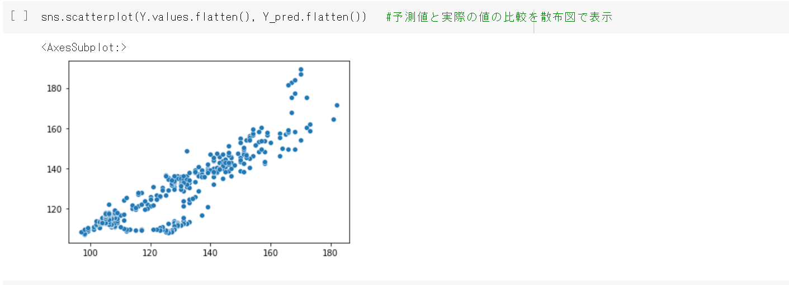
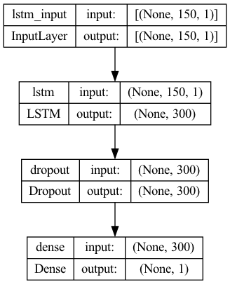
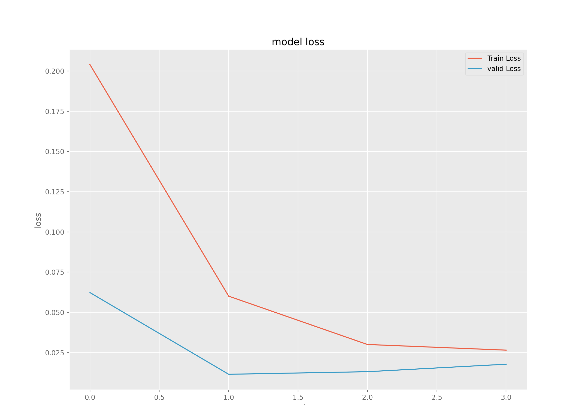
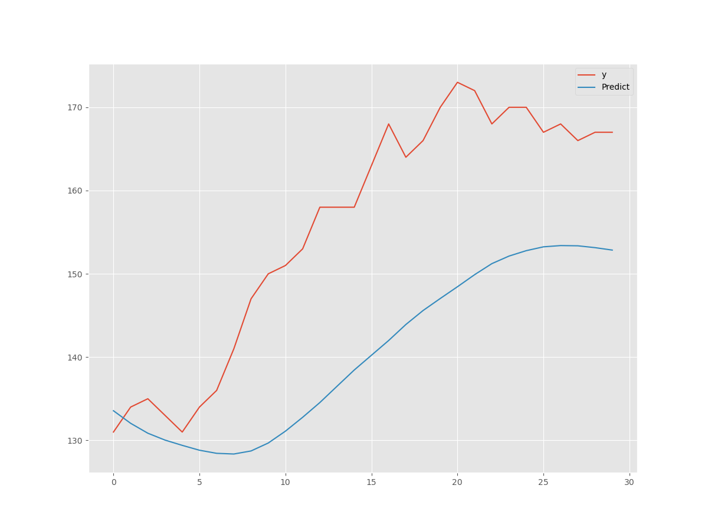

はじめに
- スマートフォンの普及や情報処理技術の発達によって、個人や企業などが膨大な量のデータを蓄積できるようになったため、そのような膨大なデータ（ビッグデータ）をうまく活用できれば、新たな価値を生み出すことができる。
ビッグデータを活用して有益な知見を見出すことができる手法を紹介していく。
また、サイトを訪れることでデータ分析の手法を身に付け、その後も参照ができるように、アーカイブ的なサイトを目指し制作した。
目次
・なぜ解析にPythonを使うのか
・EDA（探索的データ解析）について
・分析
・重回帰分析
・LSTMについて
・まとめ
なぜ解析にPythonを使うのか
Pythonは、幅広い用途で利用されているプログラミング言語であり、
簡潔な文法、豊富なライブラリなどが特徴である。初心者にも扱いやすく、かつ様々な応用が利く言語といえる。
データ分析を支援するようなライブラリが豊富であるため、Pythonは汎用型の言語でありながらデータ分析の分野でよく用いられる。この言語を身に着けることができたら、自信での活用の幅も広がるだろう。
EDA（探索的データ解析）について
EDAとは、Explanatory Data Analysisの略で、日本語では「探索的データ分析」と訳される。
データの特徴を把握し、構造を理解することを目的に行うもので、パターンの発見、異常の特定、仮説のテスト、前提条件の確認などが行われる。
利用するデータの中身を理解したり、分析の方針を決める上でとても重要な作業なので、データ分析においては欠かせないものとなっている。
具体的には、データの確認（データ数・カラム・欠損値の確認など）、基本統計量の確認、相関関係の確認、データの可視化を行うものである。
分析
レギュラーガソリン価格について、関連すると考えられる、原油価格、月中平均為替相場、C重油価格、輸入物価指数を用いて分析していく
ここで、openpyxl、およびpandasというライブラリをもちいて、csvデータをインポートし、データフレームにした。
corrメソッドを用いて、それぞれのデータ同士の相関係数を表示した。相関係数は二つのデータ間の相関関係の強さを表す指標で、-1から+1までの値をとる。値が+1に近いほど両者の間に「正の相関がある」と言え、-1に近いほど「負の相関がある」と言える。
この分析の結果、「輸入物価指数（原油）」と「c重油価格」の間にはとても強い正の相関がある一方で「月中平均為替相場」と「レギュラーガソリン価格」との間にはあまり強い相関関係がないといえることが分かった。
次にdescribeメソッドをもちいて、各種基本統計量を表の形で表示させた。ここでは、上から「要素の個数」、「算術平均」、「標準偏差」、「最小値」、「第一四分位数」、「中央値」、「第三四分位数」、「最大値」が表示される。
基本統計量を確認することは、データの特徴を把握する上でとても重要である。例えば「輸入物価指数（b重油・c重油）」のデータについて、平均値と最大値を見てみるとおよそ４倍程度の差があることが分かった。データ全体から見てあまりにもかけ離れた値をとるデータを含めることは、統計分析を行う上で好ましくない場合があるため、そのようなデータについては標準偏差などを用いてそれが「外れ値」であるかを判断し、場合によってはそのデータを除外する必要がある。
これらの統計量を可視化し、ヒストグラムを表示させるライブラリを利用した結果、図のような散布図が得られた。相関関係についてはかなり如実に表れていることが可視化できた。
 
重回帰分析
EDAで得られたデータをもとに解析方法を選択していくが、今回は、日付を除いたすべてのデータが量的データであることなどを鑑みて、重回帰分析とLSTMの二つの手法を用いた分析を行っていく。
重回帰分析とは、ある一つの目的変数に対して複数の説明変数があるとき、それら説明変数のうちどの変数がどの程度の影響を、目的変数に対して及ぼしているのかを測る分析手法である。今回の場合は、目的変数が「レギュラーガソリン価格」、説明変数がそれ以外のデータという風に設定した。
ここでは、statsmodelsという統計計算のライブラリを用いて分析を行った。Xに説明変数のデータ、Yに目的変数のデータを代入していくが、現状では回帰式のy切片が0の状態のため、正しい結果が出力されない。そこでsm.add_constant()関数を用いて、説明変数の行列に対してすべての値が1の列を追加する必要がある。
次に、普通の最小二乗法を用いるsm.OLS()関数の第一引数に目的変数、第二変数に説明変数を渡した。これで分析のモデルは完成したので、これをfit()関数で学習させ、summary()関数で結果を出力した。
するとこのような内容が表示された。一番上のグループでは、決定係数やF値といったモデルの特性についての情報などが表示されている。真ん中のグループには回帰係数や、それぞれのt値p値などの情報が表示されている。一番下のグループには誤差項に関する情報が表示されている。決定係数の値が大きいことからこのモデルはある程度精度の高いものであるといえ、また、回帰係数の値から、輸入物価指数（原油）が最もガソリン価格に影響を与えるという風に考えることができる。
次は別のライブラリを用いて解析を行った。

scikit-learnという機械学習ライブラリから、linear_modelのLinearRegressionモデルと、metircsのr2_scoreをそれぞれインポートし、先ほどと同様に変数に目的変数・説明変数を代入して、それらを用いて重回帰分析を行っていく。得られる結果についてデータフレームにして出力したものが上の表になる。ここでは各説明変数それぞれの回帰係数が表示されており、先ほどの結果と同じ値であることが分かる。
次にpredict()関数を用いモデルから予測される値を算出し、それと実際の値をr2_score()関数の引数に渡すことで、決定係数を算出した。得られた決定係数はおよそ0.772となり、これは先ほどの結果とも一致していることが分かる。
最後に、予測値と実際の値について比較した散布図を出力してみた。seabornのscatterplot()を用いて出力するが、ここで引数に渡すデータについて、values.flatten()で値を取得し一次元の配列に直すことで、散布図で出力する際適切なデータ形式に成形している。出力された図について、x軸が実際の値、y軸が予測された値となっており、ある程度正確な予測ができていることが分かる
LSTM
- 概要
- kerasライブラリでLSTMレイヤを追加し学習をおこなった。
- LSTMとは
- RNN(Recurrent Neural Network)の一種。
- 実装
- 準備
pandasはデータ分析に役立つライブラリ。機械学習において、データの準備に役立つ。tensorflowとkerasについては理解があまり十分でない。前者がフレームワークで後者がライブラリという認識。
データの用意
pandasライブラリのread_csv()を用いてcsvファイルを読み込んでいる。petrol_price.csvをpetrol_price_for_lstm.csvに編集し直した。dsとyの二つの項目があり、yはガソリン価格。gen_dataset()でデータにラグを作った。今回、説明変数Xと目的変数Yはガソリン価格であり、Xはひとつ前のガソリン価格をしようしている。学習データとテストデータに分けて、モデル構築のためのデータに再編成して、データの準備は完了。
- モデル作成
LSTMの層を追加し、20%の確率でデータを弾き過学習を防ぐDropout層を追加し、中間層を一つの層にするDense層を追加した。
-学習
実際に学習し学習結果を出力させた。
-テスト
予測とテストデータを比較し、結果を出力した。
まとめ
・ある程度納得のいく結果が得られた。
・今回は分析手法として重回帰分析とLSTMの二つを用いたが、データを変えて別の手法にも挑戦してみたい。